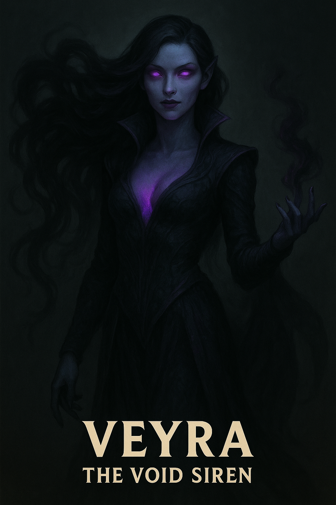

Veyra

Name & Alias: Veyra – The Void Siren
Age / Race / Role: Unknown / Void-Infused Siren / Illusionist, Sonic Manipulator
Appearance: Pale-skinned woman with cascading black-blue hair, glowing voice sigils on her arms. Eyes shimmer like a starless abyss.
Affinities & Energy Types: Shadow, Sonic, Void
Threat Tier: S-Rank
Core Stats (0–10):
• Power: 8
• Speed: 8
• Technique: 10
• Intelligence: 8
• Defense: 6
• Aura Control: 9
Signature Abilities:
• Siren’s Dissonance
• Void Aria
• Eclipsing Note Mirage
• Abyssal Choir Trap
• Voice of Madness
Personality Summary: Alluring yet ruthless. Manipulates perception and sound. Her loyalty lies only with chaos.
Faction or Allegiances: Ashborn Circle (Order of the Abyss)